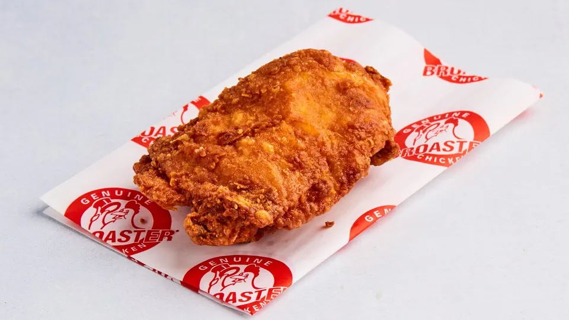
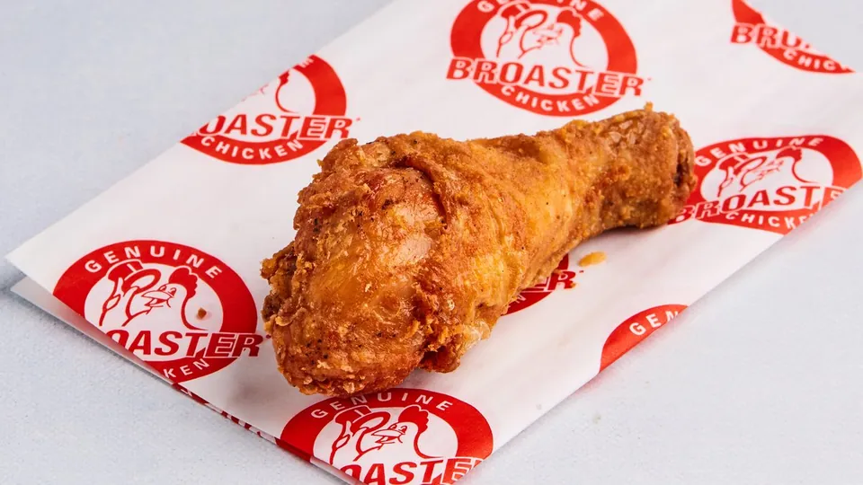
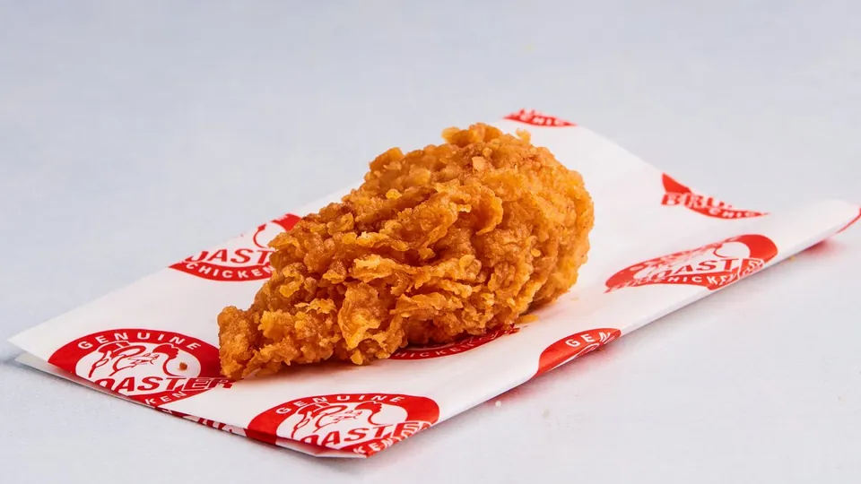
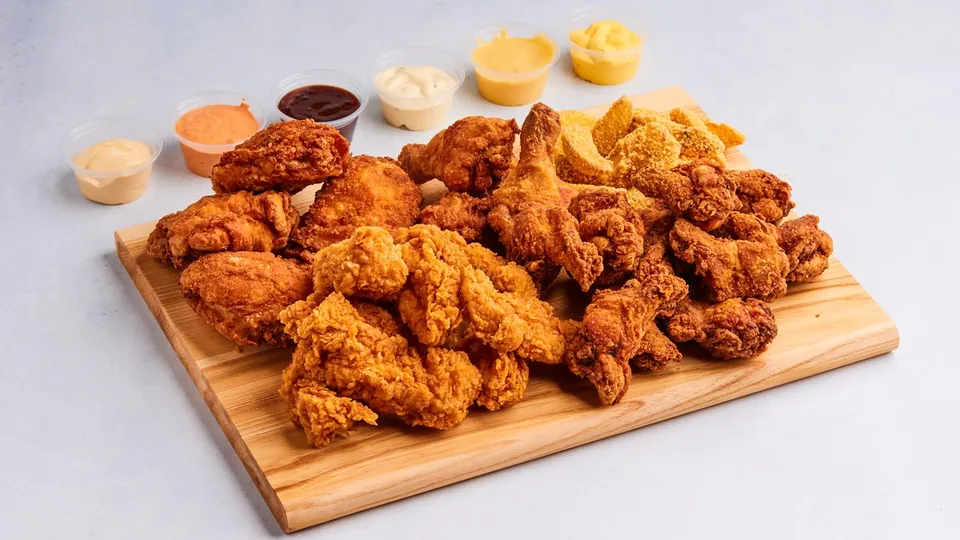

Råvarene
Ekte kylling, våre egne krydderblandinger og ingenting kunstig.

Bare naturlig kylling
Vi bruker bare naturlig kylling. Fersk og smakfull, i hver eneste restaurant.

Trykkfritert, ikke bare fritert
Spesielle trykkfrityrer stenger saften inne. Derfor blir kyllingen sprø utenpå og saftig inni.

Egne paneringer og marinader
Paneringer, marinader og krydder er våre egne blandinger. Det gir samme smak uansett hvor du spiser La Kokido.

Ingenting kunstig
Vi holder kunstige ingredienser unna maten. Rene smaker, ærlig mat.